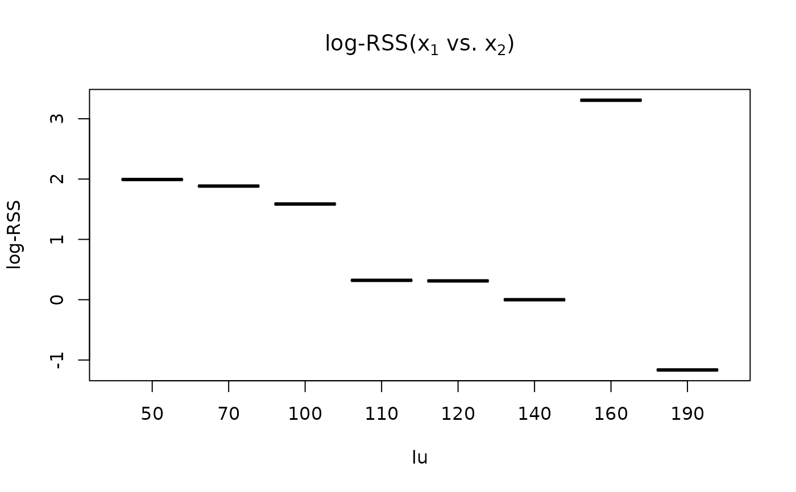

Default plot method for an object of class log_rss
# S3 method for class 'log_rss'
plot(x, x_var1 = "guess", x_var2 = "guess", ...)[log_rss] An object returned by the function log_rss().
[character] The variable to plot on the x-axis. A string of
either "guess" (default – see Details) or the variable name.
[character] A second predictor variable to include in the plot.
Either "guess" (default – see Details), NA, or the variable name.
[any] Additional arguments to be passed to \link{plot}().
Not currently implemented.
A plot.
This function provides defaults for a basic plot, but we encourage the user to carefully consider how to represent the patterns found in their habitat selection model.
The function log_rss() is meant to accept a user-defined
input for x1. The structure of x1 likely reflects how the user intended
to visualize the results. Therefore, it is possible to "guess" which covariate
the user would like to see on the x-axis by choosing the column from x1 with
the most unique values. Similarly, if there is a second column with multiple
unique values, that could be represented by a color. Note that if the user needs
to specify x_var1, then we probably cannot guess x_var2. Therefore, if the
user specifies x_var1 != "guess" & x_var2 == "guess", the function will return
an error.
This function uses integers to represent colors, and therefore the user can
change the default colors by specifying a custom palette() before
calling the function.
# \donttest{
# Load data
data("amt_fisher")
amt_fisher_covar <- get_amt_fisher_covars()
# Prepare data for RSF
rsf_data <- amt_fisher |>
filter(name == "Leroy") |>
make_track(x_, y_, t_) |>
random_points() |>
extract_covariates(amt_fisher_covar$landuse) |>
mutate(lu = factor(landuse))
# Fit RSF
m1 <- rsf_data |>
fit_rsf(case_ ~ lu)
# Calculate log-RSS
# data.frame of x1s
x1 <- data.frame(lu = sort(unique(rsf_data$lu)))
# data.frame of x2 (note factor levels should be same as model data)
x2 <- data.frame(lu = factor(140,
levels = levels(rsf_data$lu)))
# Calculate
logRSS <- log_rss(object = m1, x1 = x1, x2 = x2)
# Plot
plot(logRSS)
#> Guessing x_vars:
#> x_var1 = lu
#> x_var2 = NA

# }